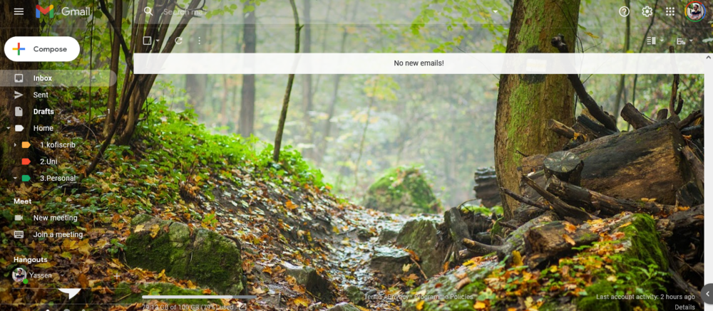

How Chill People Manage email (the Optimal Experience)
Jun 11 '21 • Written by Yassen Shopov
📖 13 minute read
Email has been the main instrument of professional communication for the past decade. Arguably, it is due to the ability to answer asynchronously, something that has made an even bigger impact in the last year due to the increasing demand for work-from-home jobs. As you may know from personal experience, most jobs use it as a tool of communication, and it is often not a skill taught in school. This is why it may be shocking to many young people when they first get exposed to it.
Gmail has made the transition from personal to professional a bit smoother (unlike Outlook, which still looks a bit repelling due to the many unnecessary functions, which makes it resemble Excel a bit). Since most phones and smart devices now require you to have at least a Gmail account for them to be set up properly, almost everyone and their grandma has a Gmail. This naturally means that Gmail will become a crucial tool not only of your personal organisation, but also for your university and professional connections.
I have always enjoyed the aesthetics of neatly organised stuff, by category, colour, origin.
So when the moment came that I had to use my Gmail account to communicate with university and to use it for work, I needed to make a brand new account, just to start off clean. I’m not kidding, the situation was agonizing, my old account was a complete mess. I realised that I couldn’t possibly be productive and organised with my it. It was full of spam, random past conversations, and I had even spelled my name wrong in the account info (imagine that)
It is a difficult task to keep your email inbox organised, but as it is with physical clutter, minimalism proves to be useful. What you'll see in this article is the way I keep my email spam-free, orderly, mostly empty from things that are of no value. I have attached a lot of links, so you can go off tangents and learn extra new tricks and hacks.
1. Start with a clean slate
This is arguably the most important point, and is the reason why minimalist gurus are so fast or advise you to get rid of your useless junk in one go, without thinking too much.
If you’re like most people, you probably veeeery rarely delete emails from your inbox, and you may or may not have 999+ unread emails in that same inbox.
Believe me, I've seen such cases, and I'm sure that it's near impossible to be motivated to keep it tidy if it looks so messy in the beginning. So, think about it this way - what part of those mails is actually important? Spend like an hour of your time just scrolling and deleting random emails from your inbox - you'll figure out that most of it is useless. That bunch of spam mails from Facebook or Pinterest that notify you that person X has sent you a friend request or something? To the bin they go.
Then go and delete them from the bin as well, just exorcise that spam out into oblivion.
When you reduce your full inbox to an empty inbox, or possibly full of only important mail you can't afford to delete, now is the time when my fave tool in Gmail comes in.
2. Labels
Labels are found in most apps, but people tend to either not know about their existence or just misuse them as they see fit (notice, ‘misuse’, not ‘use’).
Yes, there isn’t one set of rules to use when applying these productivity and organisation tricks, but I believe in tree-like structures (I'm named after a tree in Bulgarian, you see) and I think that in this case as well it makes sense to use one. The way I see it, the more your systems, including email, resemble your real life, the better for the simplicity.
So, I use one big label called Home, and under it, as sub-labels, I have multiple labels that I think relate to the main areas of life I need organsiation in. Examples are 'kofiscrib' (my whole Art Business ), Uni, Finances, Friends, Travel.
Inside each of those I may or may not have separate sub-labels, which add bonus distinction and organisation - for example, inside the Travel label, I have separate labels for all the different travel projects that have required email correspondence.
Here is a link to where you can learn what labels are and how to apply them in your own Gmail account, but I'm sure you'd find it intuitively in settings.
Here's also a video by Nathaniel Drew on the topic of email and how he personally organises it with a similar system of labels and sub-labels.
I advise you to also color-code it, so for example every email in your Travel label gets to be orange, the Uni stuff are red, and you can very easily differentiate at a first glance which email is which, you sometimes don’t even have to read the subject line.
3. Filters
This is the place where you get ruthless. You should have already deleted all unnecessary mail from your inbox, but what do you do if it keeps appearing?
And appear again, it will, because this is what spam does. One thing you can do is unsubscribe from all those services and providers you no longer see value in, or you just don’t want in your inbox, even if they are a valuable service you use (e.g Facebook and other social media.)
However, this is not the only way you can filter through all the junk. There's a literal filter option integrated in Gmail, which helps you intelligently sort the emails coming in.
Let me give an example with my business emails. Every time somebody commissions me to make a digital illustration for them, I get a bunch of emails from PayPal to notify me on what money is being sent where. And since I know I will be getting those emails routinely, I have made a filter on my Gmail account that marks any email in my inbox containing the word PayPal to automatically go to the PayPal label.
You can further advance this by making your filters automatically open and mark certain emails as read, deleting them, doing all sorts of organisational work on your behalf without you even seeing those emails appear in your inbox. For example, I have subscribed to a bunch of newsletters by influential people in the spheres of my interest (btw, you can subscribe to my own newsletter at the bottom of this article). But I don’t always want to see each and every issue of those newsletters, I prefer to have them pile up in their respective labels, and when the time comes, I will just go and read as many of them as I like.
Movin’ on.
4. Use the power of Templates
This is something I'm so glad I stumbled upon very early after I started my art business.
I have always done my digital illustrations for clients in three stages - rough draft, coloured, and final render. And for each client, I was sending more or less the same emails at each stage. So i figured, if I was already sending out the same email time and time again, why not just copy and paste it every time?
Thankfully, I didn’t have to do that, because templates exist in our universe.
If you use Gmail templates, you can type an email once (including generic stuff like opening and closing remarks, your credentials, etc.) and save it as a template, which you can use again and again. One other trick I have up my sleeve in regard to email is to put in blank spaces in my templates like this _________. You can then use the template and just add in the new/customized information on the spot, so your emails remain interesting and relevant to the different people you're sending them to (e.g. clients). If you value your time, use templates.
5. Schedule emails
This is more of a one-shot solution, for the times when an email is urgent at a very specific time. Instead of saving it in Drafts, and then setting up a reminder for yourself to send it at the appropriate time (or god forbid, leave it to your memory), you can simply schedule it! I've done this for the following scenarios:
When you want to send an email to university, but you don’t want them to see it's been 2-3 am when you finally finished with the assignment, so you just schedule it for the next morning
When I want my mum to print me something at her job, but I come up with the idea at a time when she is not currently at the workplace
When I want to remind myself of a specific thing that needs to get done, I can just schedule an email to myself in the future
Make it a part of your weekly review to clean your email, and organise everything into the appropriate labels.
If you have good discipline, or just manage to remind yourself often enough, there would be very few emails for you to manage at the end of the week. The point is to not postpone acting upon those emails, but to delay the 'cleaning up' process. You don't really 'need' a 100% clean inbox 100% of the time, so don't waste your energy keeping it clean at all times, instead turn it into a concentrated effort once a week/month, whichever is more suitable to you personally.
And with that, you are officially in on my 5-step, 5-minute email management course! (no refunds, terms and conditions may apply 🌻)
[12:08]
by Thomas Frank